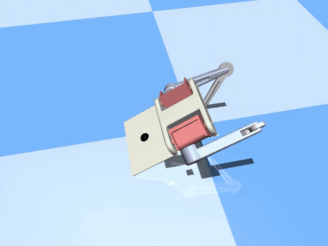
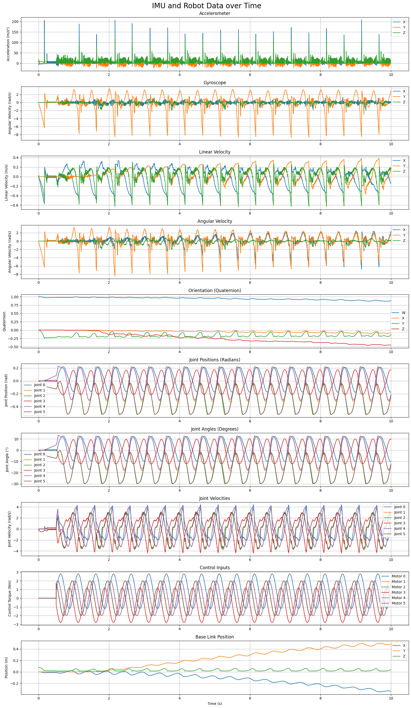

PROJECT ELEVEN
Building an Intelligent Quadruped Robot through Reinforcement Learning

Final Vision: Quadruped Robot


↓
Building an Intelligent Quadruped Robot through Reinforcement Learning
Final Vision: Quadruped Robot
CAD Design
Robot Format
Simulation Format
Physics Sim
Designed individual components for the bipedal prototype:
Insert → Mirror PartConverted SolidWorks assembly to URDF format using the SW2URDF exporter:
Used MuJoCo's built-in compiler to convert URDF to MuJoCo XML format:
compile Assembly_2legs/urdf/Assembly_2legs.urdf Assembly_2legs/urdf/Assembly_2legs.xml
C:\Users\[username]\mujoco-3.3.2-windows-x86_64\bin\compile.exe
With the XML file ready, you can now customize the simulation parameters:
Apply motors to joints for control
Set realistic motion constraints
Configure joint stiffness values
Add damping for realistic motion
Real-time sensor readings during gait pattern execution showing joint angles, velocities, and contact forces
Designing robot components in SolidWorks and converting to MuJoCo format. Currently focusing on 2-leg analysis for learning and understanding the complete workflow.
🔴 ACTIVEImplementing control systems to achieve bipedal locomotion. Testing stability and gait patterns with the 2-leg prototype.
⚡ UPCOMINGTraining the robot using RL algorithms in MuJoCo. Optimizing for agile and intelligent movement patterns.
⚡ UPCOMINGScaling to full quadruped (4-leg) version or optimizing the bipedal design based on results. Final integration and testing.
⚡ UPCOMINGDownload the complete project files to explore or replicate the workflow
Complete 2-leg CAD assembly file
.SLDASMRobot description format with kinematic tree
.URDFCompiled simulation model with sensor sites
.XMLPython code for MuJoCo simulation and analysis
.IPYNB